Префектура Окинава · Ямбару · сувениры
Что привезти из Ямбару: 14 съедобных сувениров с севера острова Окинава
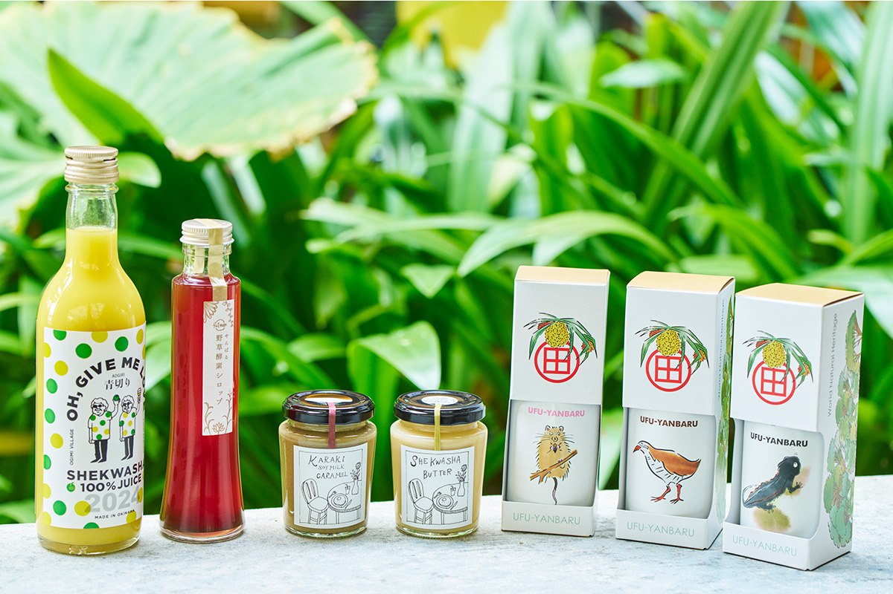
Ямбару, лесистый север острова Окинава, щедро одарён солнцем и землёй. Местные производители бережно перерабатывают то, что здесь растёт, и мы собрали 14 съедобных сувениров: напитки, приправы и сладости, а заодно магазины, где их купить.
Напитки
Кофе, имбирь и сикуваса
Начнём с того, что можно выпить. Почти у каждой бутылки здесь своя история: одни делают из того, что обычно выбрасывают, другие собирают при полной луне.
Чай из кофейных ягод Nakayama Coffee
Окинава лежит на северной границе выращивания кофе, и кофейная ферма «Накаяма» растит деревья без пестицидов. Из самих ягод она делает чай: кофеина в нём меньше половины, чем в кофе, зато много полифенолов. В 2025 году пакетик стоил 216 иен. Для «кофе каскара» сушат кожуру и красную мякоть ягод, каскару, и глубоко обжаривают (270 иен в 2025 году). Продаются в AGRI STORE.
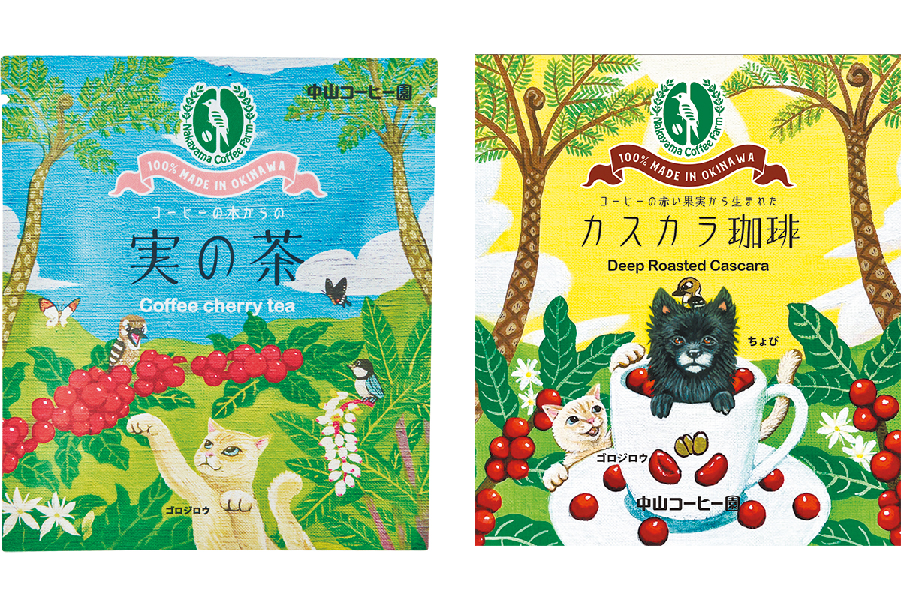
Имбирь и кола из Накидзина
В обоих напитках станции «Сорахаси» на острове Кори чёрный сахар из села Накидзин. Крафтовую колу готовят с восемью пряностями и цедрой, а если развести её молоком, получится чай масала. «Накидзинджер» отжимают из имбиря Накидзина и добавляют сок сикуваса, местного кислого цитруса, так что он заметно острый. Бутылки тоже хороши: на них нарисованы каменные стены замка Накидзин, объекта Всемирного наследия, и мост Кори. Каждая бутылка стоила 1480 иен в 2025 году.
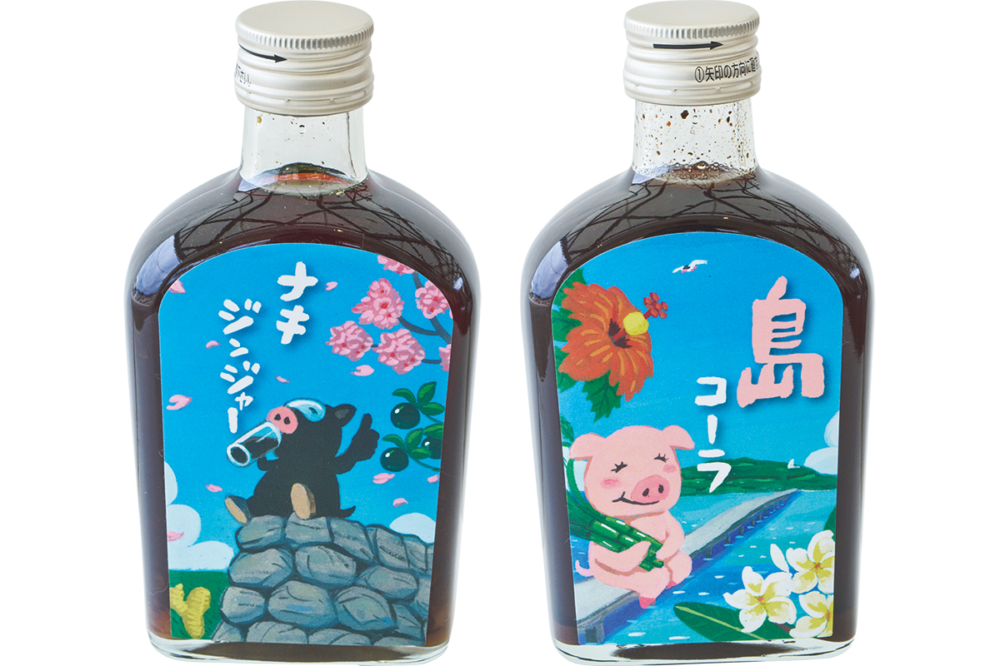
Летний чай cooking crew
Лаборатория лечебной кухни cooking crew смешивает окинавские растения по принципам восточной диетологии. Сбор «Сё», то есть «жара», очищает организм: в нём органический зелёный чай, горькая тыква гоя, кокос и гибискус. Стоит залить его кипятком, и в чайнике раскрываются зелёные кольца гоя и красные лепестки. Цена в 2025 году: 1620 иен. Продаётся на станции «Сорахаси».
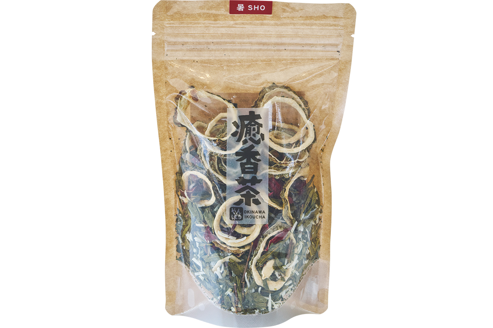
Сок OH, GIVE ME LOVE
Сикуваса это гордость села Огими, и здесь её отжимают целиком, вместе с зелёной кожурой, поэтому у сока приятная горечь. Его разводят газированной водой, добавляют в коктейли или поливают им жареную рыбу. Название марки OH, GIVE ME LOVE созвучно с Огими, а на этикетке весёлые «обаа», окинавские бабушки (1300 иен в 2025 году). Продаётся на придорожной станции Огими.
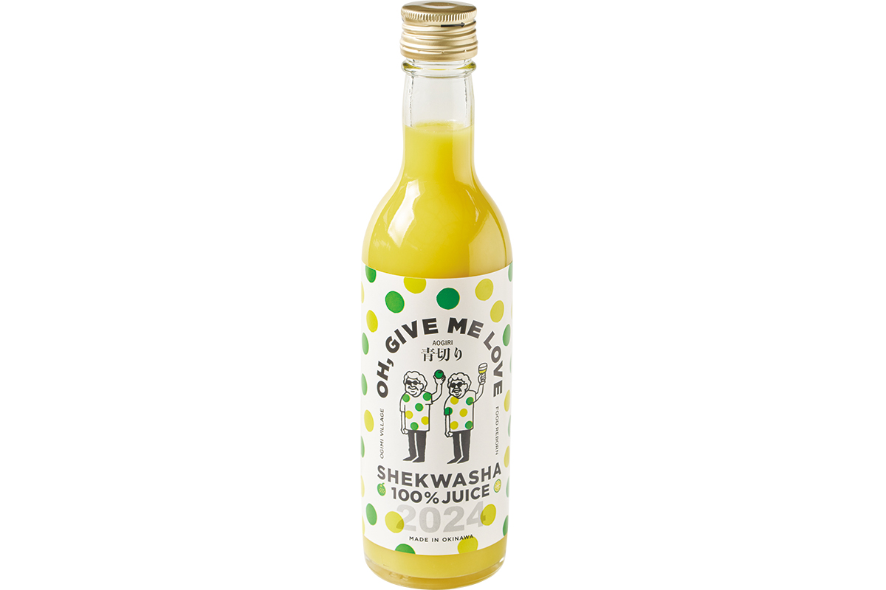
Сироп из диких трав yanbaruyasou
Сироп yanbaruyasou делают из диких трав, выросших без пестицидов, и первая среди них череда, которую на Окинаве зовут «сасигуса». Травы собирают в полнолуние, когда, как считают, сила растений выше всего, и дают им забродить. Красно-розовый цвет сиропу дают питахайя, розелла и свёкла. Цена в 2025 году: 1836 иен, продаётся на станции Огими.
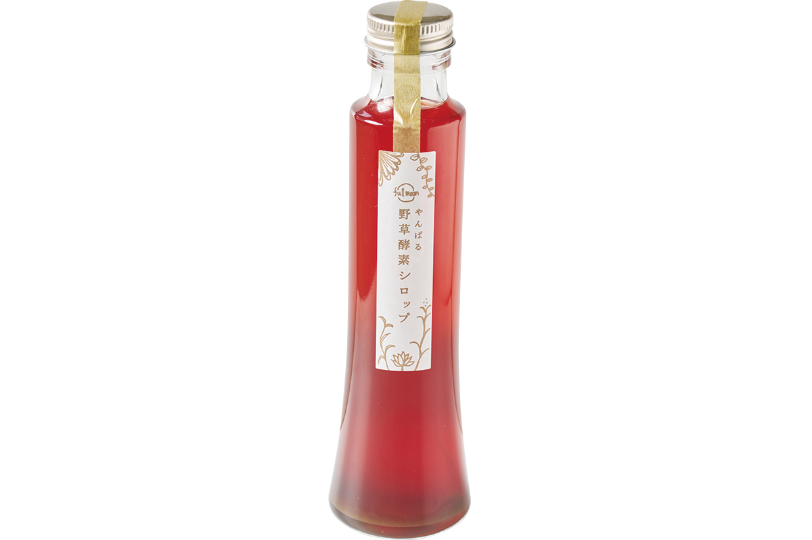
Мини-авамори UFU-YANBARU
Винокурня «Ямбару сюдзо» готовит мягкий авамори крепостью 15 градусов на природной воде Ямбару. Мини-бутылки по 180 миллилитров удобно везти домой. На этикетках десять обитателей леса Всемирного природного наследия, среди них ямбару-куина и бугорчатый тритон, и выбирать любимую почти так же приятно, как пить. В 2025 году каждая стоила 660 иен, продаются на станции Огими.
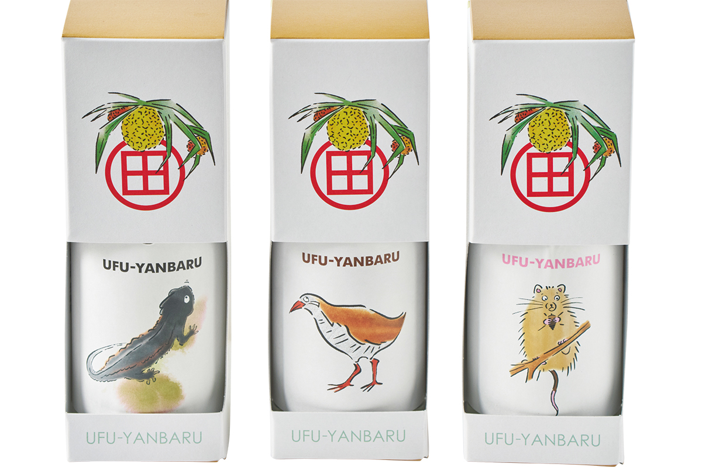
Приправы
Специи, соус для мяса и кочхуджан
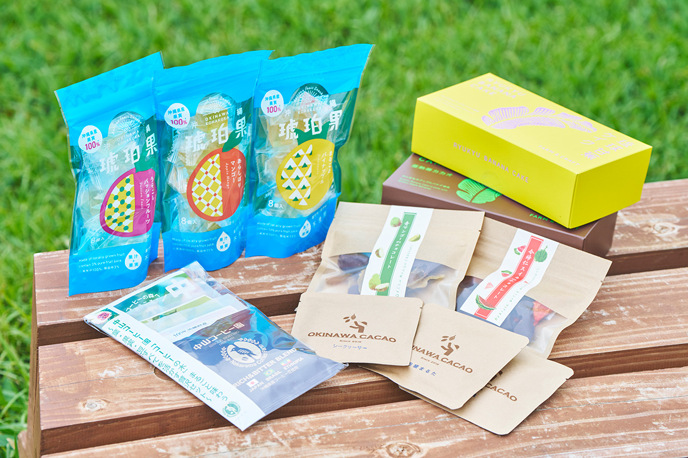
Специи Ямбару от «Куксонии»
Окинава лежит на северной границе «пояса пряностей». Фермеры «Куксонии» выращивают здесь куркуму, имбирь и островной перец симатогараси, добавляют пять пряностей вроде кумина и кориандра и мелют смесь на каменных жерновах с водяным охлаждением. Аромат получается тонким: смесь хороша в рагу и заправках (756 иен в 2025 году). Продаётся в кафе Cookhal.
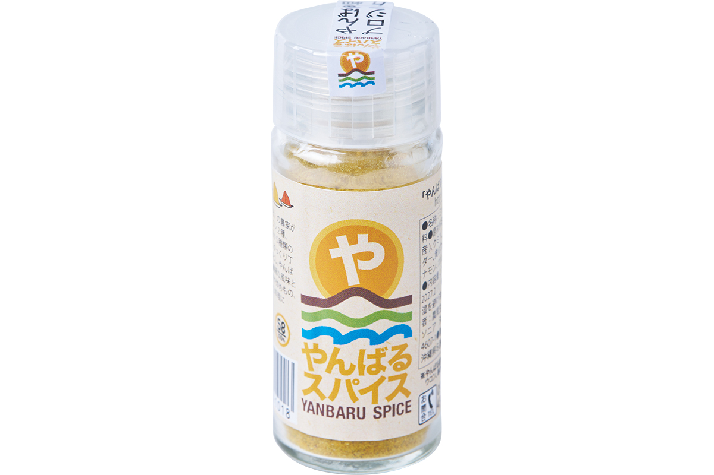
Соус «Нуу» для мяса
На станции «Сорахаси» продают соус с загадочным названием «Нуу». На окинавском диалекте это значит «что?». Окинавский ананас, чёрный сахар Накидзина и лук выдерживают в соевом соусе, и получается приправа специально для мяса: к барбекю, ростбифу, а с тёртым имбирём к свинине по-японски. В 2025 году бутылка стоила 1280 иен.
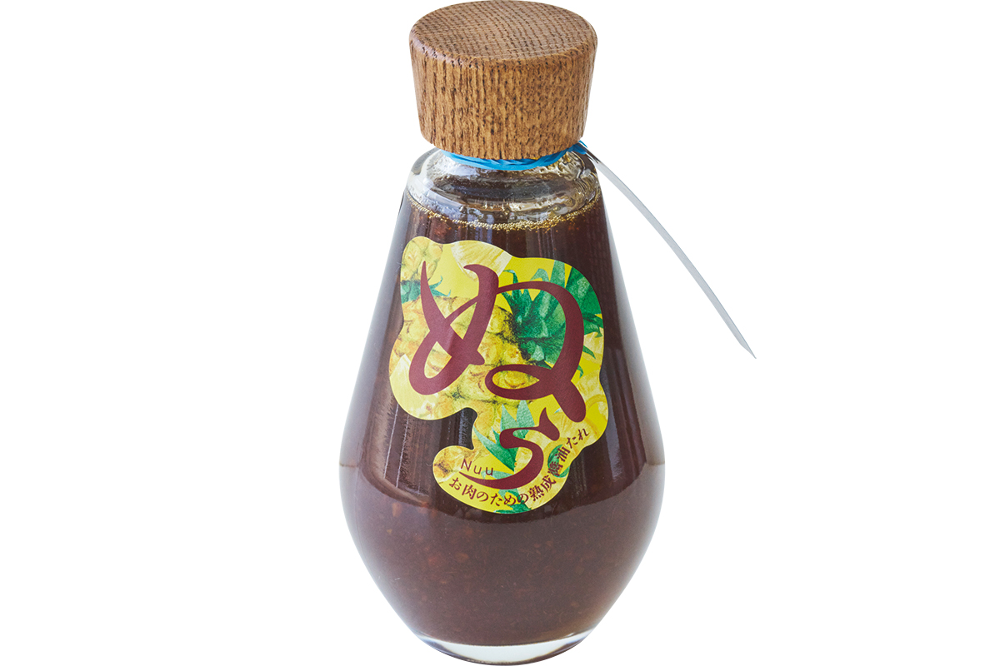
Кочхуджан с чёрным сахаром
Кочхуджан от cooking crew готовят без пищевых добавок, на чёрном сахаре и лучшем сладком корейском молотом перце. Говорят, он согревает живот и помогает при усталости и зябкости. Паста получила специальный приз жюри на конкурсе местных продуктов села Накидзин. Её едят с овощными палочками, кладут в тушёные блюда и салаты (870 иен в 2025 году). Продаётся на станции «Сорахаси».
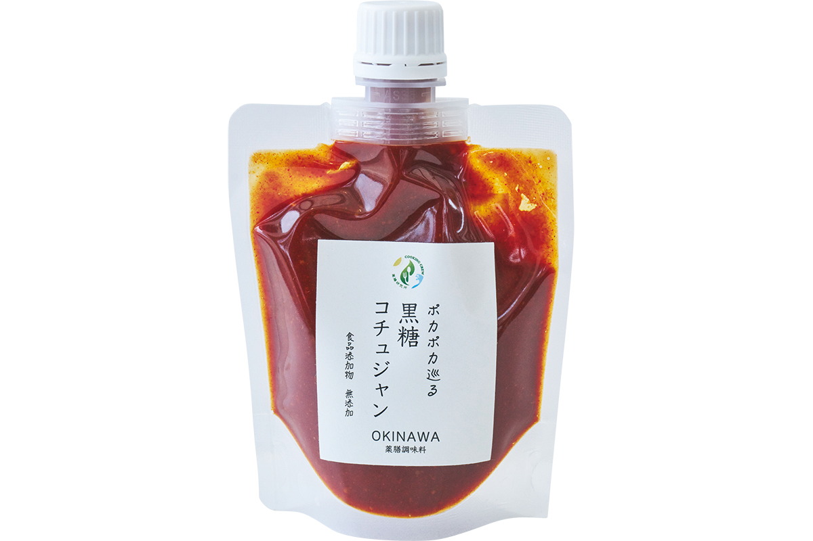
Сладости
Фруктовый мармелад, спреды и шоколад
Фруктовый мармелад OTW
Гуаву, маракуйю, манго и ананас для мармелада OTW покупают прямо у фермеров, приезжая к ним на поля. Мармелад на агар-агаре делают без искусственных подсластителей и красителей, поэтому вкус у него как у самого фрукта. Каждый пакетик стоил 621 иену в 2025 году, продаются в AGRI STORE.
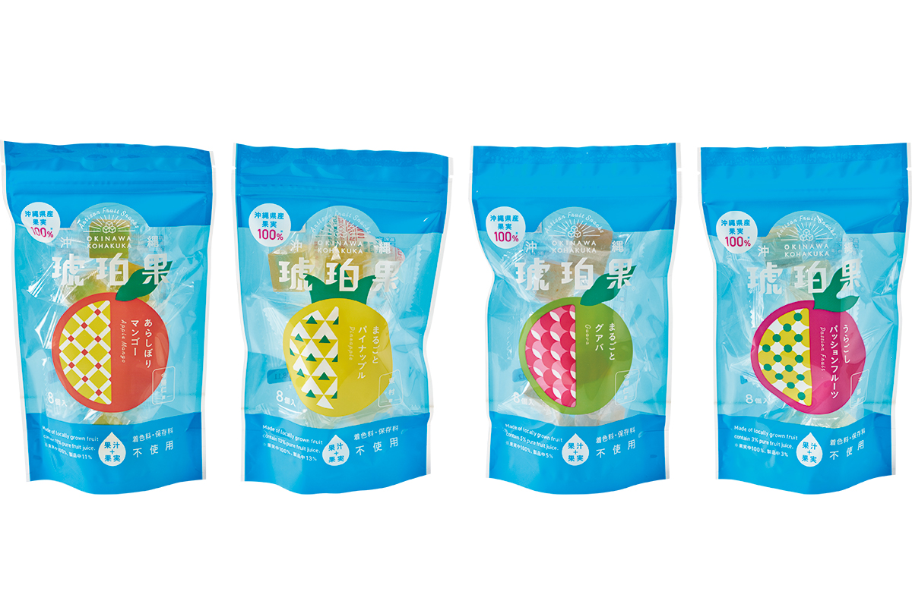
Спреды nun okinawa
Спред из сикуваса с тростниковым сахаром мажут на тост или подают к жареному мясу. Второй пахнет «караки», окинавской корицей, и подходит к японским сладостям. Оба без добавок, в 2025 году каждый стоил 1200 иен. Продаются на станции Огими.
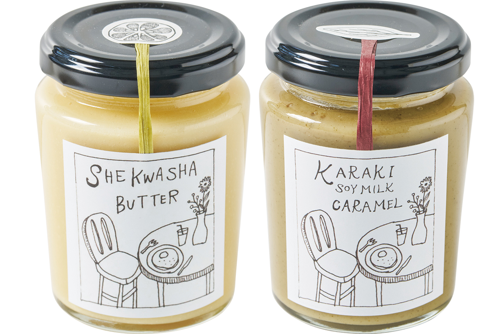
BUENA SUERTE от «Кёэйся»
Название BUENA SUERTE по-испански значит «удачи». Кусочки чёрного сахара покрыты тёртым какао из Испании, и во рту они тают вместе, превращаясь в шоколад. В этой сладости компания собрала многолетний опыт работы с чёрным сахаром (1860 иен в 2025 году). Продаётся на станции «Сорахаси».
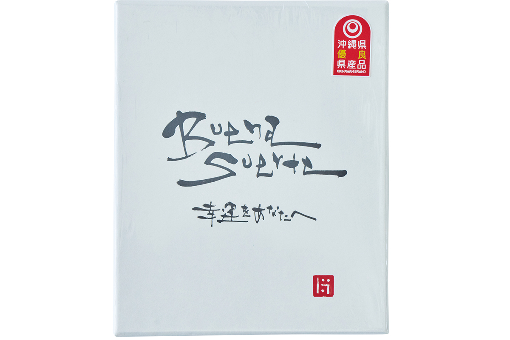
Шоколад с сухофруктами OKINAWA CACAO
Для шоколада с зелёным манго OKINAWA CACAO сушит недозрелые плоды с заметной кислинкой (1512 иен в 2025 году). Шоколад с арбузом Накидзина, сладостью не меньше 11 градусов, делают без сахара (1696 иен). Продаются в AGRI STORE.
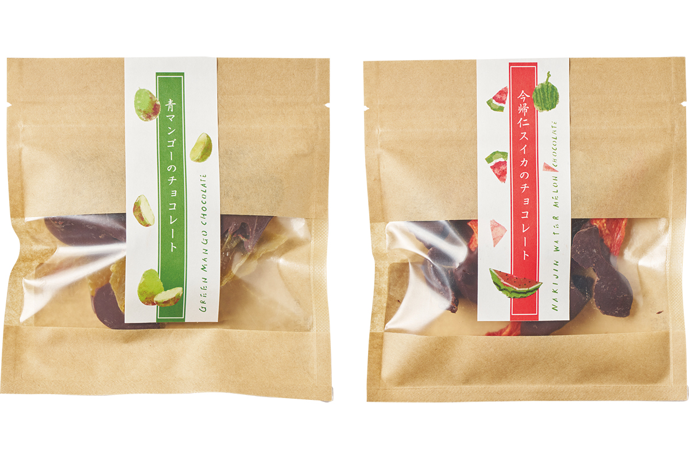
Банановый кекс «Наго агри парк»
На Хонсю яблочный банан почти не встретишь. Из его кисло-сладкой упругой мякоти делают начинку, заворачивают в песочное тесто и запекают. Кекс бывает двух видов, простой и с какао, в 2025 году каждый стоил 1620 иен. Коробка с листом банана сразу напоминает о юге. Продаётся в AGRI STORE.
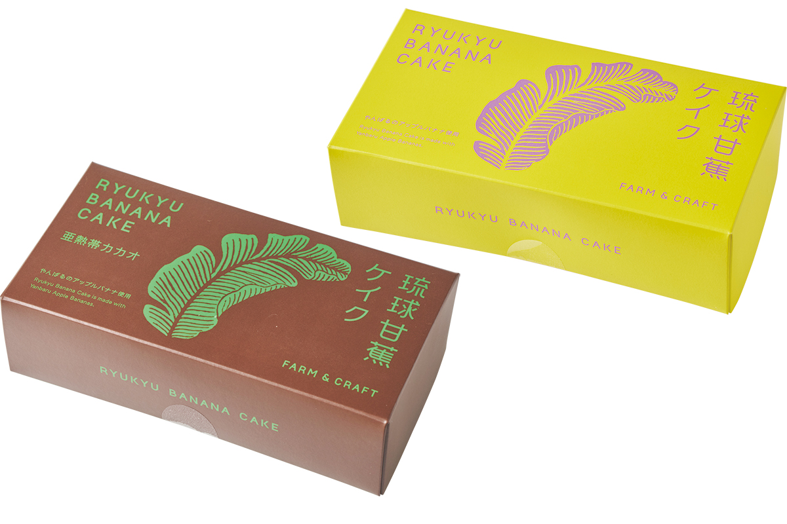
Где купить
Три магазина и кафе
AGRI STORE в Наго собирает вкусные подарки со всего Ямбару, включая сладости кондитерских города. В том же комплексе работает кафе Cookhal: здесь подают обеды из свежих овощей, трав и пряностей, сезонные напитки, а при кафе есть прилавок фермерских продуктов.
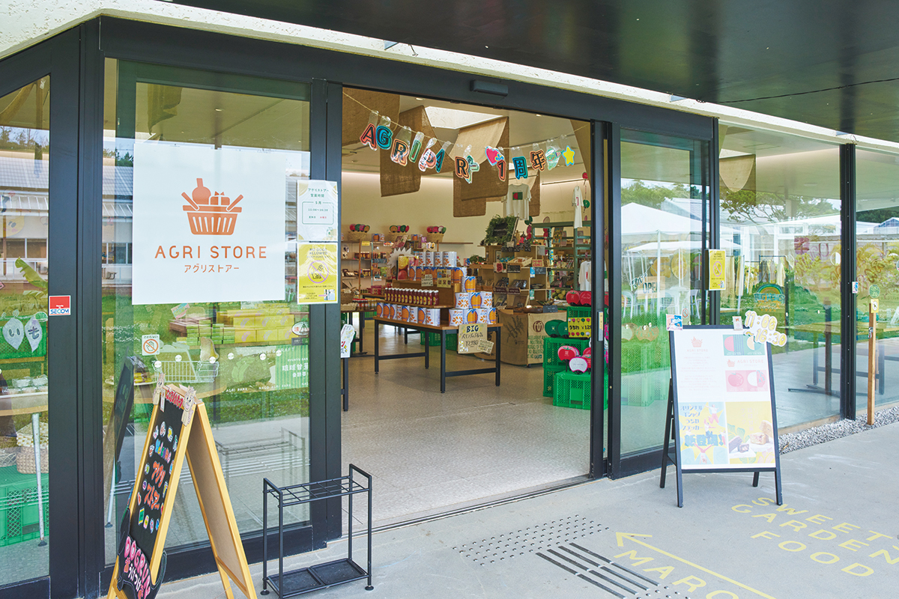
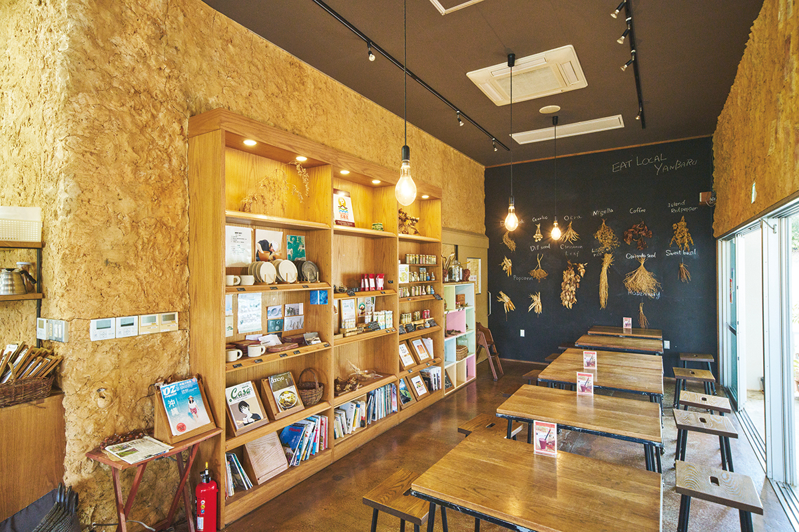
AGRI STORE
- Адрес
- префектура Окинава, Наго, Наго, 4607-1
- Телефон
- +81 980-54-8550
- Часы работы
- 11:00–16:30
- Выходные
- нерегулярные
Cookhal
- Адрес
- префектура Окинава, Наго, Наго, 4607-1
- Телефон
- +81 980-43-7170
- Часы работы
- 9:00–17:00
- Выходные
- без выходных
Станция «Сорахаси» на острове Кори соединяет торговый зал и большой фудкорт и часто устраивает мероприятия. Здесь встречаются местные жители и путешественники.
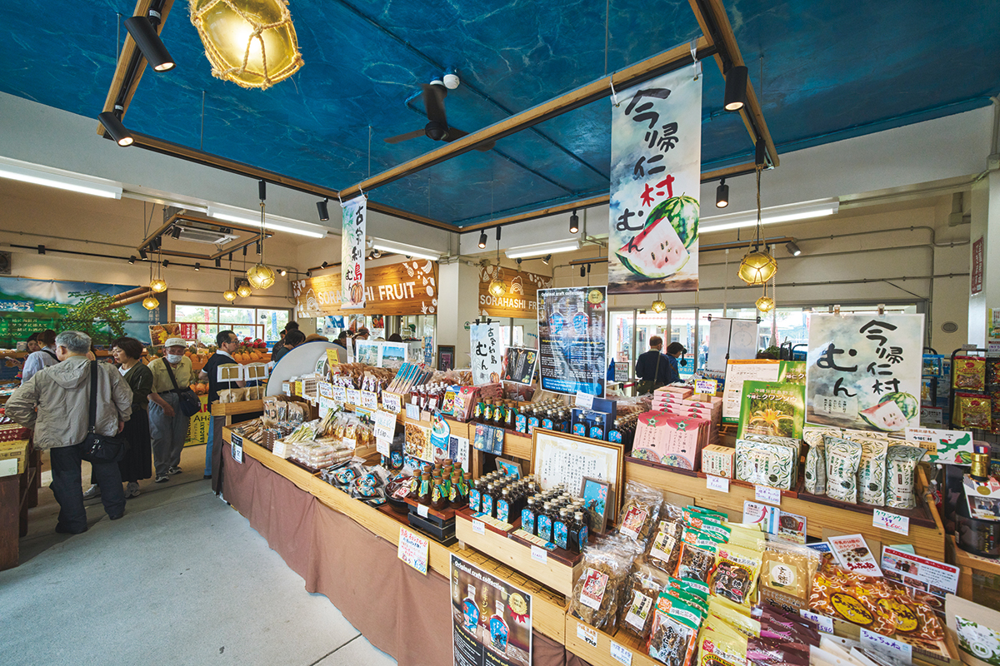
Станция «Сорахаси»
- Адрес
- префектура Окинава, уезд Кунигами, село Накидзин, Кори, 323-1
- Телефон
- +81 980-56-2128
- Часы работы
- 9:00–19:00
- Выходные
- без выходных
На придорожной станции Огими каждый день выкладывают свежие овощи, а ещё здесь есть столовая, кафе-киоск и зал, где показывают фильмы о природе Ямбару.
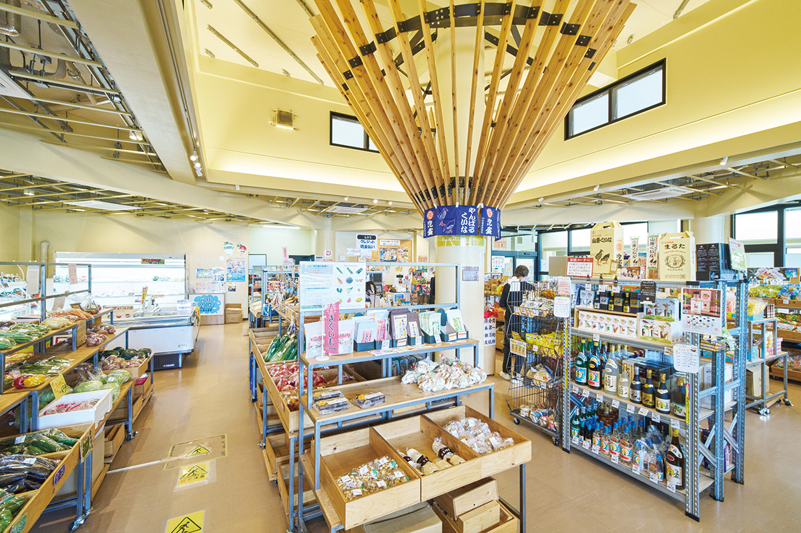
Придорожная станция Огими «Визит-центр леса Ямбару»
- Адрес
- префектура Окинава, уезд Кунигами, село Огими, Цуха, 95
- Телефон
- +81 980-44-2233
- Часы работы
- 9:00–18:00
- Выходные
- без выходных (прилавок овощей)
Фото: Цунэтака Симабукуро.